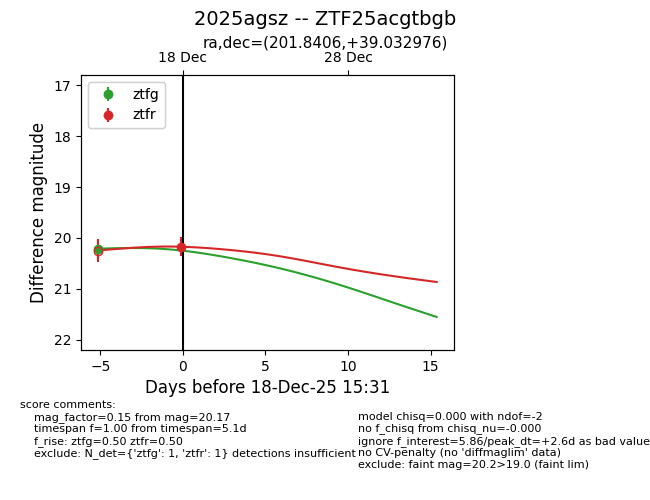
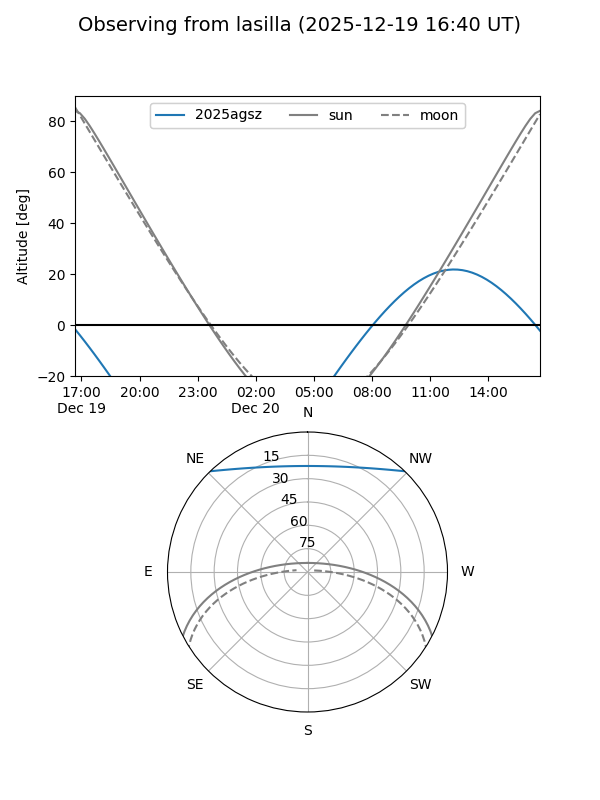
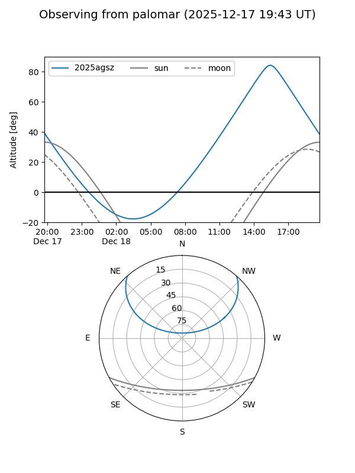
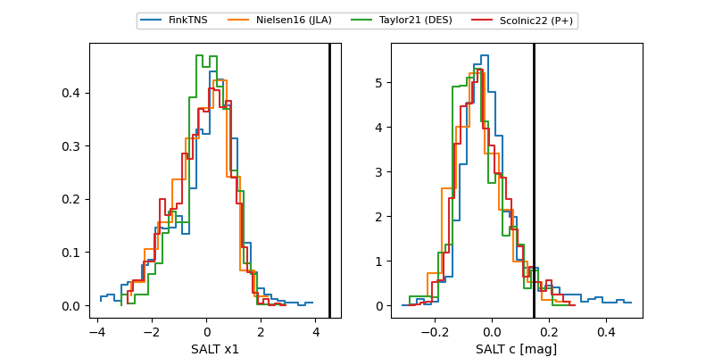

2025agsz
Target 2025agsz at 2025-12-18 15:32
Aliases and brokers:
FINK: fink-portal.org/ZTF25acgtbgb
Lasair: lasair-ztf.lsst.ac.uk/objects/ZTF25acgtbgb
ALeRCE: alerce.online/object/ZTF25acgtbgb
TNS: wis-tns.org/object/2025agsz
YSE: ziggy.ucolick.org/yse/transient_detail/2025agsz
alt names
ZTF25acgtbgb (ztf,fink_ztf)
2025agsz (tns,yse)
Coordinates:
equatorial (ra, dec) = 201.8406,+39.03298
equatorial (HMS+DMS) = 13:27:21.74,+39:01:58.72
galactic (l, b) = (93.0020,+75.93395)
Photometry
last ztfg=20.21, ztfr=20.17
1 ztfg, 1 ztfr detections
Lightcurve

Visibility


Additional plots
